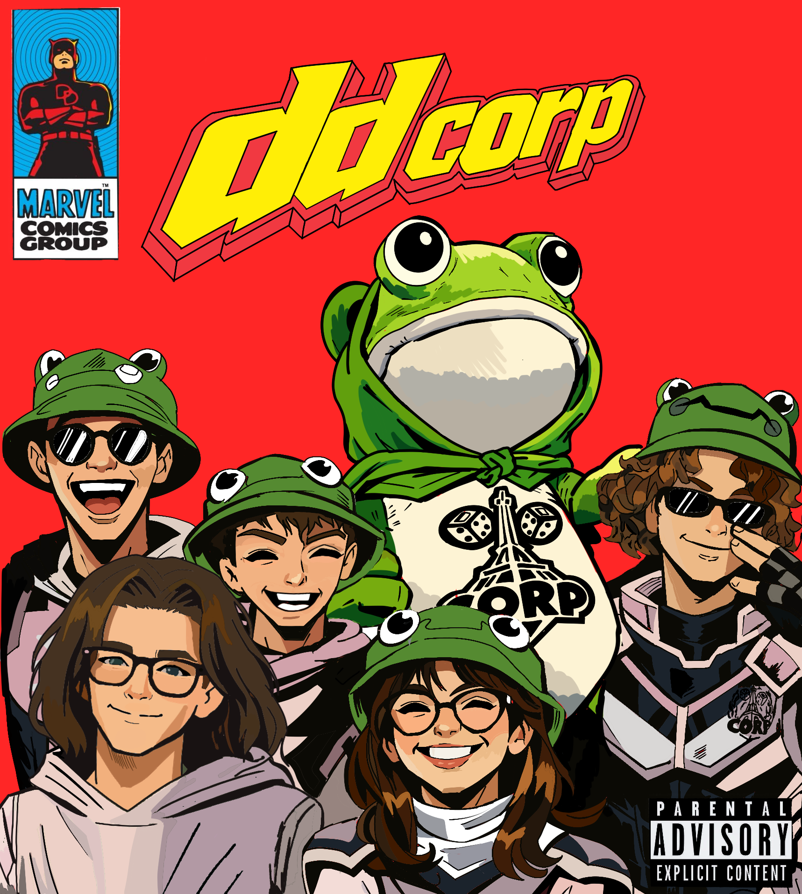

🚀 Équipe de Robotique DD CORP – FIRST LEGO League
Qui sommes-nous ?
Nous sommes DD Corp, une équipe de robotique du Lycée Gustave Eiffel Armentières, passionnée par l'innovation et la technologie. Nous participons à la FIRST LEGO League (FLL), une compétition où nous concevons et programmons des robots SPIKE Prime pour relever des défis passionnants !
🤖 La FIRST LEGO League, c'est quoi ?
La FLL est une compétition mondiale qui encourage les jeunes à explorer les sciences, la technologie, l'ingénierie et les mathématiques (STEM) à travers des défis basés sur des missions robotiques et un projet d'innovation. Chaque année, un nouveau thème nous pousse à trouver des solutions créatives à des problèmes réels.
🏆 Nos défis
🔹 Concevoir et programmer un robot LEGO pour accomplir des missions sur un tapis de jeu.
🔹 Développer un projet d'innovation en lien avec le thème de l'année.
🔹 Travailler en équipe et respecter les valeurs fondamentales de la FLL : découverte, innovation, inclusion et fun !
👥 Notre équipe
Nous sommes un groupe d'élèves aux compétences variées :
🔹 Guillaume, Lucas, Jules, Janna et Soan
🔹 Chez DD Corp, tout le monde travaille sur tout ! Chacun contribue à la conception, la programmation, la stratégie et la présentation. Nous apprenons ensemble, partageons nos idées et nous améliorons à chaque étape du projet.
📅 Nos dates clés :
🛠 Préparation & entraînements : 13 mars et les midis
🎉 Compétition régionale FLL – 14 mars à Armentières : Rendez-vous pour présenter notre robot et notre projet face aux autres équipes !
🏆 Finale nationale (si qualifiés !) : 4 avril a Mulhouse
📸 Suis notre aventure sur Instagram pour découvrir nos projets et nos compétitions !

--Vestige--
L'origine du projet
Nous ne sommes donc pas partis de l’archéologie par hasard : c’est le thème de la compétition qui nous a poussés à nous intéresser à ce domaine. Pour mieux comprendre les besoins réels du terrain, nous avons décidé d’échanger directement avec des professionnels.
Nous avons ainsi pu discuter avec des archéologues comme Fawzi Doumaz et Daniel Istria. Grâce à plusieurs échanges et visioconférences avec eux, nous avons découvert à quel point les sédiments sont une source d’informations essentielle pour comprendre un site archéologique.
Cependant, analyser ces sédiments demande souvent du temps, de l’expérience et parfois l’envoi d’échantillons en laboratoire. Nous avons donc cherché une idée qui pourrait faciliter et accélérer cette étape importante du travail des archéologues.
Notre solution : une boîte d’analyse automatisée
Nous avons conçu l’idée d’une boîte capable d’analyser automatiquement un échantillon de sédiment.
Le principe est simple : l’archéologue place un échantillon de sédiment dans la boîte, et celui-ci va ensuite passer à travers plusieurs étapes d’analyse, un peu comme dans une chaîne d’examen scientifique.
À l’intérieur de la boîte, un petit tapis roulant fait avancer le sédiment à travers différents capteurs. À chaque étape, un nouveau capteur va analyser une caractéristique du sédiment.
Ainsi, en quelques minutes, plusieurs informations importantes peuvent être récupérées automatiquement. Cette solution fonctionnerait comme un mini laboratoire portable directement sur le terrain.
Les différentes étapes d’analyse
Lorsque le sédiment est placé dans la boîte, il avance progressivement sur le tapis roulant et passe par plusieurs stations d’analyse.
Pourquoi ce système peut être utile
Notre boîte d’analyse permettrait d’obtenir rapidement plusieurs informations scientifiques sur un sédiment, directement sur le terrain.
En résumé, notre objectif est de créer un outil qui permettrait de rendre l’analyse des sédiments plus rapide, plus simple et plus efficace.